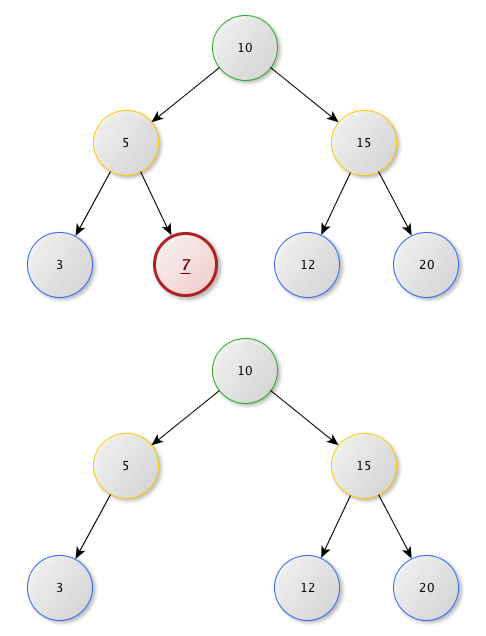
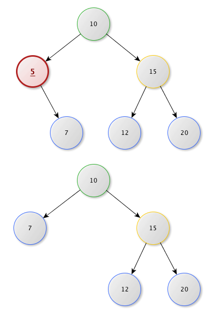
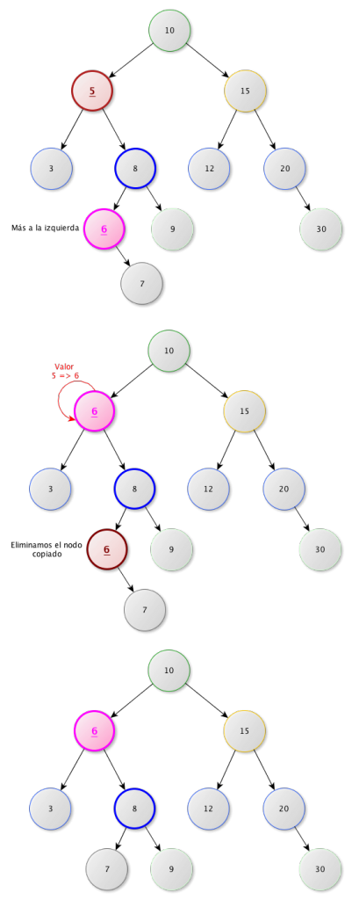

La eliminación de un elemento presenta ciertas dificultades debido a que hay que enganchar los hijos del nodo eliminado con el padre, pero respetando la condición de que un nodo no puede tener más de dos hijos:
Analicemos los casos particulares:
- Eliminar un nodo hoja (sin hijos)
- Eliminar un nodo con solo un hijo
- Eliminar un nodo con ambos hijos
Eliminar un nodo hoja (sin hijos):
El caso más sencillo, lo único que hay que hacer es borrar el nodo y establecer el apuntador de su padre a nulo.

Eliminar un Nodo con un subárbol hijo :
Este caso tampoco es muy complicado, únicamente tenemos que borrar el Nodo y el subárbol que tenía pasa a ocupar su lugar.

Eliminar un Nodo con dos subárboles hijos :
Este es un caso algo complejo, tenemos que tomar el hijo derecho del Nodo que queremos eliminar y recorrer hasta el hijo más a la izquierda ( hijo izquierdo y si este tiene hijo izquierdo repetir hasta llegar al último nodo a la izquierda), reemplazamos el valor del nodo que queremos eliminar por el nodo que encontramos ( el hijo más a la izquierda ), el nodo que encontramos por ser el más a la izquierda es imposible que tenga nodos a su izquierda pero si que es posible que tenga un subárbol a la derecha, para terminar solo nos queda proceder a eliminar este nodo de las formas que conocemos ( caso 1, caso 2 ) y tendremos la eliminación completa.
